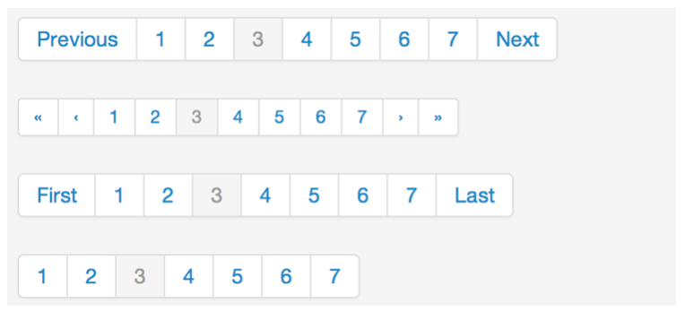
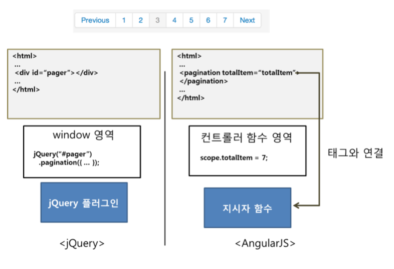
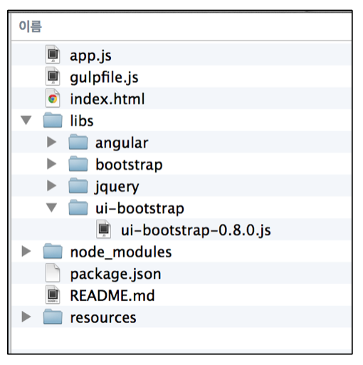
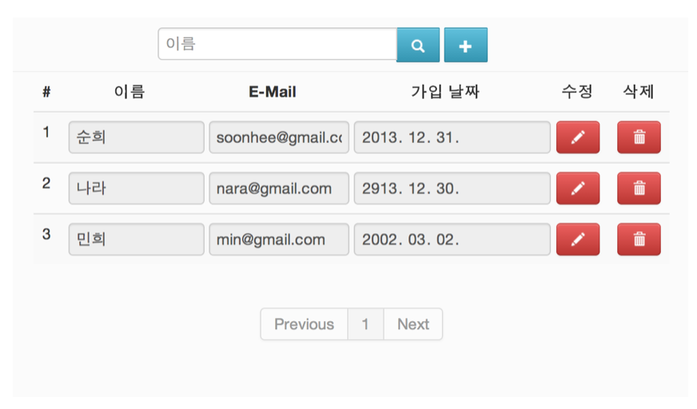
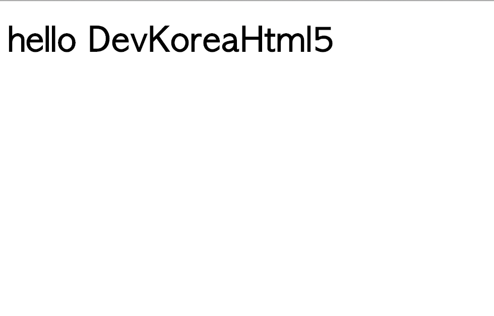

지시자에 대하여 알아보자
AngularJS Getting Start에서 사용자관리 웹 어플리케이션을 개발하면서 우리는 다양한 지시자를 사용하였다. 그때의 코드들을 기억한다면 ng-app, ng-controller, ng-click과 같은 HTML 표준 속성이 아닌 AngularJS에서 제공하는 속성들을 기억할 것이다. 단지 표면적으로 보면 이런 HTML에는 없는 태그나 속성들을 지시자라고 할 수 있다.
하지만 본질적으론 AngularJS 지시자는 기존 HTML에 없는 기능을 확장할 수 있게 한다. 가령 사용자 목록이 하나의 페이지에 다 보여주기 어려워 다음 그림과 같은 페이징 처리를 하는 컴포넌트가 필요하다고 하자.

AngularjS를 이용하면 아래와 같이 pagination 지시자를 이용하여 페이징 기능을 사용할 수 있다.
<pagination total-items="totalItems" page="currentPage"></pagination>기존 제이쿼리에서는 특정 DOM의 id 값이나 class 값을 이용하여 DOM을 선택한 다음 플러그인을 적용하여 이러한 기능을 구현하였다면 AngularJS는 지시자를 이용하여 이러한 기능을 구현할 수 있다. 다음 그림은 제이쿼리와 AngularJS의 차이점을 보여준다.

그럼 AngularJS Getting Start에서 만든 사용자관리 웹 어플리케이션에 페이징 컴포넌트를 사용해보자. 사실 AngularJS는 페이징 컴포넌트와 같은 UI 컴포넌트를 제공하지 않는다. 하지만 UI Bootstrap 이라는 구글의 AngularJS팀이 아닌 우리와 같은 일반 개발자들이 만든 별도의 라이브러리가 있다. AngularJS가 더 빠르게 확산된 이유 중 하나도 수많은 개발자들이 이러한 라이브러리들을 만들어 공유하고 있기 때문이다. ngmodule 사이트에 방문하면 다양한 AngularJS 라이브러리들을 확인할 수 있다.
이제 본론으로 돌아가 UI Bootstrap에 대하여 살펴보자. UI Bootstrap은 트위터 부트스트렙을 AngularJS의 지시자로 만들어 놓은 라이브러리이다. 해당 라이브러리는 UI Bootstrap 사이트에서 다운받을 수 있다. 본 예제에서는 0.8버전을 이용하겠다. 참고로 해당 글을 작성할 때 최신 버전은 1.0이었다. 파일을 다운로드 받아 아래 그림과 같이 libs 폴더 안에 ui-bootstrap이라는 폴더를 만들고 해당 파일을 위치시킨다.

이제 index.html에 ui-bootstrap-0.8.0.js를 script 태그를 이용하여 추가한다.
<head>
<meta charset="UTF-8">
<title>사용자 관리 DEMO APP</title>
<link rel="stylesheet" href="libs/bootstrap/css/bootstrap.min.css">
<link rel="stylesheet" href="resources/app.css">
<script type="text/javascript" src="libs/angular/angular.js"></script>
<script type="text/javascript" src="libs/angular/angular-cookies.js"></script>
<script type="text/javascript" src="libs/ui-bootstrap/ui-bootstrap-0.8.0.js"></script>
<script type="text/javascript" src="libs/ui-bootstrap/ui-bootstrap-tpls-0.8.0.js"></script>
<!-- 새로운 라이브러리 ui-bootstrap-tpls-0.8.0.js를 추가했다. -->
<!-- 생략 -->다음으로 index.html에 UI Bootstrap에서 제공하는 pagination 지시자를 사용하여 사용자 목록을 보여주는 테이블 아래에 삽입하여 보자.
<div class="row-fluid">
<!-- 생략… -->
</div>
<div class="row-fluid">
<pagination class="text-center" total-items="totalItems" page="currentPage"></pagination>
</div>이제 자바스크립트 부분을 수정해 보자. 모듈에 대하여 설명한 내용이 기억이 나면 이제 무엇을 해야 할지 알 것이다. UI Bootstrap이 제공하는 지시자들을 사용하기 위해 해당 모듈을 사용한다고 모듈선언 시 작성하는 것이다. 그리고 전체 아이템의 수와 현재 페이지 수를 $scope을 통하여 지시자에 전달한다.
angular.module('userMgnt', ['ui.bootstrap']).
//UI Bootstrap 모듈명인 ui.bootstrap을 추가하였다.
controller('mainCtrl', ['$scope', function ($scope) {
//생략…
$scope.totalItems = $scope.userList.length;
$scope.currentPage = 1;
//생략…이제 브라우저에서 웹 어플리케이션을 다시 읽으면 다음 그림과 같이 사용자 정보 테이블 아래에 페이징 컴포넌트를 볼 수 있다.

지시자를 만들어 보자
AngularJS는 서비스와 마찬가지로 미리 만들어진 지시자를 제공하지만 지시자를 직접 만들 수 있는 API를 제공한다. 물론 앞에서 본 UI Bootstrap의 지시자들도 이 API를 이용하여 만들었다. 그럼 간단히 지시자를 만드는 방법을 살펴보자. 지시자 역시 모듈 API를 이용하여 만들 수 있다. 그럼 간단히 name 속성 값에 인사를 하는 hello 지시자를 만들어 보겠다. 다음과 같이 hello.html을 만든다.
<!doctype html>
<html ng-app="sampleApp">
<head>
<meta charset="UTF-8">
<script type="text/javascript" src="libs/angular/angular.js"></script>
<script type="text/javascript">
angular.module('sampleApp', []).
directive('hello', function () {
// Module API의 directive 메소드를 통하여 hello 지시자를 정의한다.
return function ($scope, iElm, iAttrs, controller) {
// 간단히 링크함수를 반환하여 프레임워크 내부에서 지시자에 scope을 전달하는 링크단계에서 해당 지시자의 DOM을 조작하거나 이벤트를 연결하거나 scope의 상태를 변경할 수 있다.
iElm.html("<h1>hello "+iAttrs.name+"</h1>")
};
});
</script>
</head>
<body>
<div hello name="DevKoreaHtml5"></div>
</body>
</html>만든 hello.html을 브라우저에서 확인하면 아래 그림과 같은 결과를 볼 수 있다.

위에서 본 것과 같이 지시자를 정의할 때 directive 메소드에 지시자 이름과 지시자 정의 함수를 주는데 지시자 정의 함수에서는 링크함수를 반환하거나 지시자 설정 객체를 반환할 수 있다. 위의 hello 지시자는 지시자 정의 함수에서 링크함수를 반환하였는데 이번엔 hello 지시자에 템플릿을 정의하고 hello 지시자를 요소명으로 사용하도록 아래와 같이 변경해 보자.
<!doctype html>
<html ng-app="sampleApp">
<head>
<meta charset="UTF-8">
<script type="text/javascript" src="libs/angular/angular.js"></script>
<script type="text/javascript">
angular.module('sampleApp', []).
directive('hello', [function(){
return {
// 지시자 설정객체를 반환한다.
restrict: 'EA',
// 지시자가 사용되는 방법을 설정한다. E는 요소명, A는 속성명을 의미한다. EA는 요소명과 속성명 둘 다 사용가능하게 설정한 것이다.
template: '<h1>hello </h1>',
// 지시자의 템플릿을 작성한다.
link: function($scope, iElm, iAttrs, controller) {
$scope.name = iAttrs.name;
// 해당 지시자가 사용된 요소의 name 속성 값을 가져와 $scope에 대입한다. 그러면 템플릿의 이 계산되어 화면에 name 속성 값이 보여진다.
}
};
}]);
</script>
</head>
<body>
<hello name="DevKoreaHtml5"></hello>
지시자를 요소명으로서 사용하고 있다.
</body>
</html>다시 hello.html을 브라우저에서 보면 똑 같은 결과를 볼 수 있다. 사실 위에서 본 restrict, template, link 설정 외에도 지시자를 정의할 때 설정해야 할 것이 매우 많다. 지시자에 대한 자세한 내용은 시작하세요 AngularJS 프로그래밍 도서나 AngularJS 공식사이트 개발자 문서를 참고하기 바란다